2013 Teams/Projects
Prograham Cracker
Partner: Pow Wow Energy
Team:
Jay Mutarevic (lead), Nick Krause, Kristen Morse, Branton Horsley
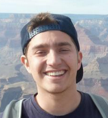
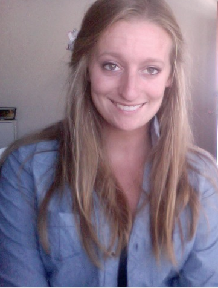
Mentor: Olivier Jerphagnon
Team Name: Prograham Cracker
Project Overview: Creating a tool to for monitoring power usage and allowing for efficient data analysis.
Vision Statement: [PDF]
SRS: [PDF]
Design Specs: [PDF]
Final Poster: [PDF]
Final Presentation: [PDF]
The Constructors
Partner: Ring Revenue
Team:
Alex Hamstra (lead), Jared Roesch, Kyle Jorgensen, Ben McCurdy, Brittany Berin
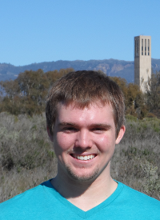
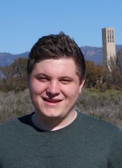
Mentor: Colin Kelly
Team Name: The Constructors
Project Overview: We will be developing a new online ticket selling and purchasing system that will be easy and convenient to use by both sellers and purchasers.
Vision Statement: [PDF]
SRS: [PDF]
Design Specs: [PDF]
Final Poster: [PDF]
Final Presentation: [PDF]
Undefined_reference_to_teamName
Partner: Workday
Team:
Zach Sperske (lead), Leif Dreizler, Andrew Cooney, Andrew Thomas, Scott Bishop
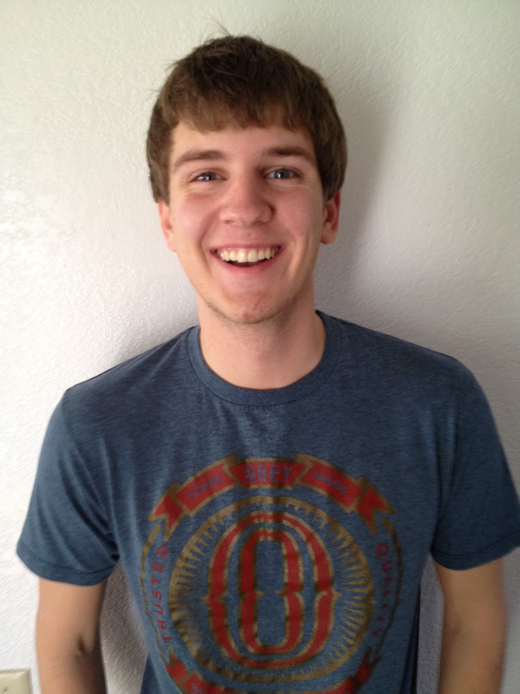
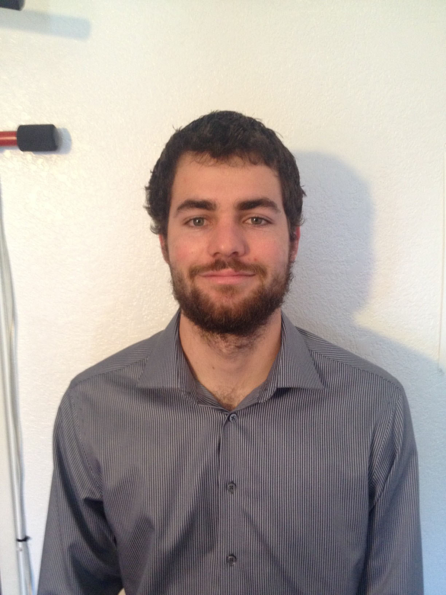
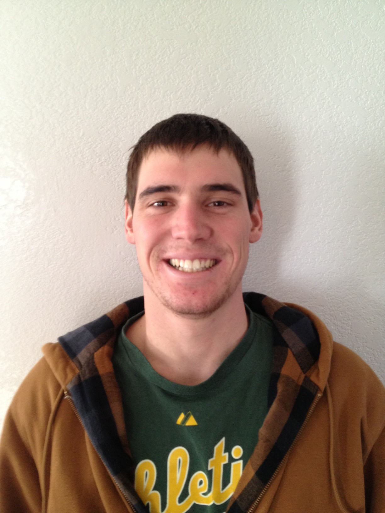
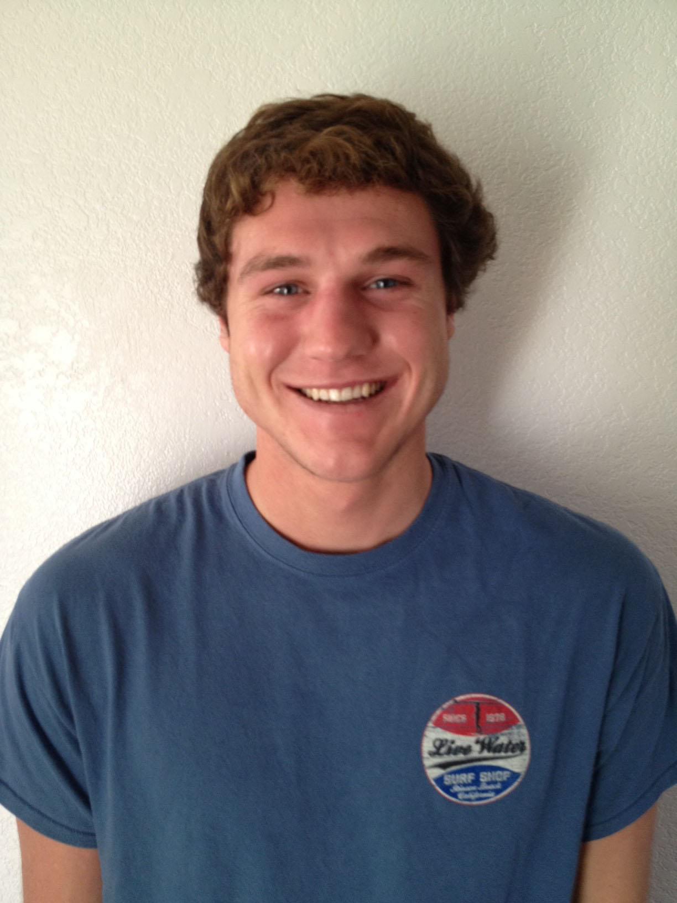
Mentors: Joe Korngiebel and Leighanne Levensaler
Team Name: Undefined_reference_to_teamName
Project Overview: Mobile application for consumption and generation of user made content. It's a knowledge base that can be used within a company to aid employees with day to day tasks within the company. It's focused mainly around the creation and viewing of videos.
Vision Statement: [PDF]
SRS: [PDF]
Design Specs: [PDF]
Final Poster: [PDF]
Final Presentation: [PDF]
Team BRX
Partner: Aerospace
Team:
Matthew Greenfield (lead), Anthony Coccia, Aaron Dodson, Peter Huang, Kenny Bier
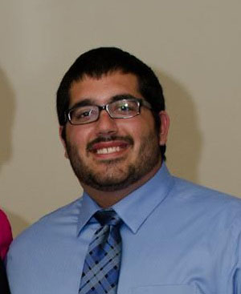
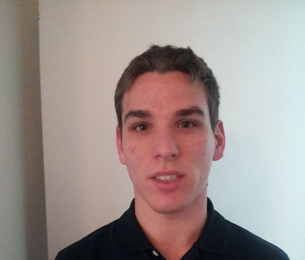
Mentors: Nehal Desai and Setso Metodi (and Ron Scrofano)
Team Name: Team BRX
Project Overview: A web-based system will transform data from real-time feeds, websites, and social networks into geospatial locations, places of interest, and other useful metadata. The system will organize the data over a large domain, in a scalable manner, into a logical and structured format updated in real time.
Vision Statement: [PDF]
SRS: [PDF]
Design Specs: [PDF]
Final Poster: [PDF]
Final Presentation: [PDF]
Hex Pistols
Partner: JPL
Team:
Jerry Peng (lead), Sea Pong, Alex Scarlett, Anthony Narsi, Kevin Sheridan
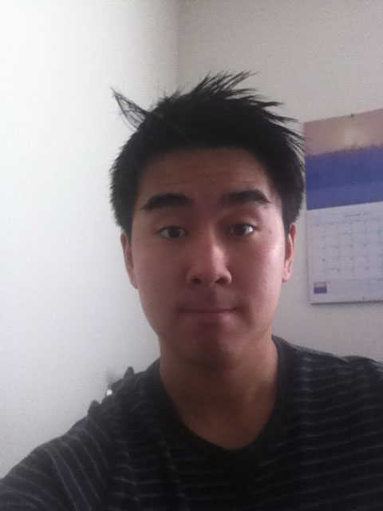
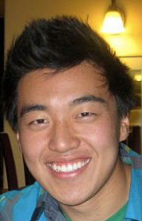
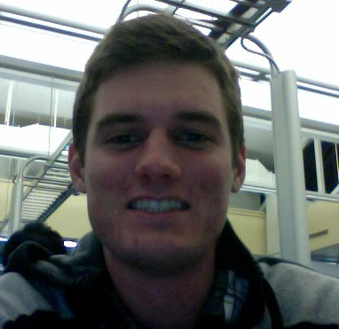
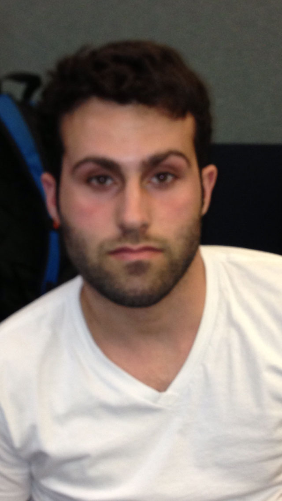
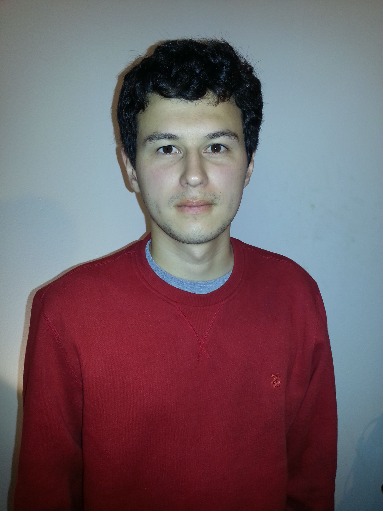
Mentor: Khawaja Shams
Team Name: Hex Pistols
Project Overview: Build an integrated system of multiple Kinects and Television screens to create a realistic three dimensional panoramic view of an chosen environment that will serve as a augmented reality workspace for the user.
Vision Statement: [PDF]
SRS: [PDF]
Design Specs: [PDF]
Final Poster: [PDF]
Final Presentation: [PDF]
Null Terminators
Partner: VMWare
Team:
Karanbir Toor (lead), Vladimir Adam, Ryan McGinley, Cesar Polanco, Nick Cross
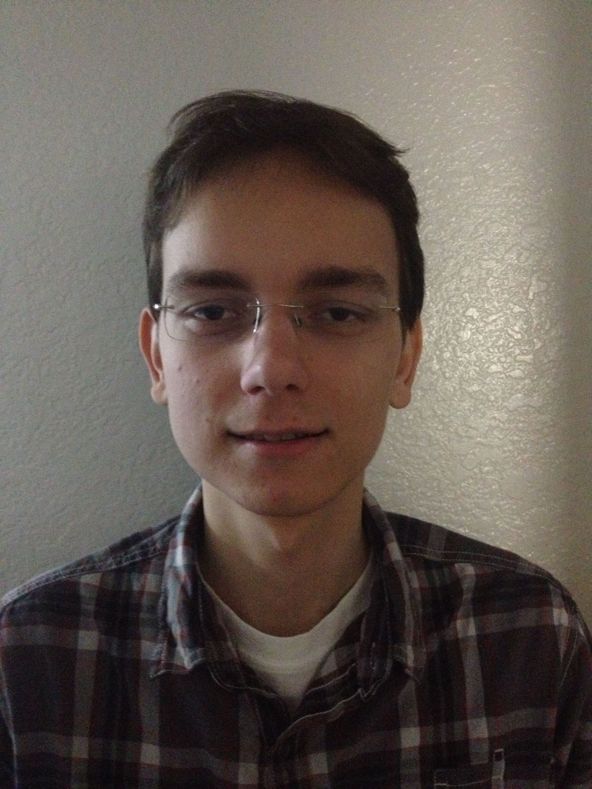
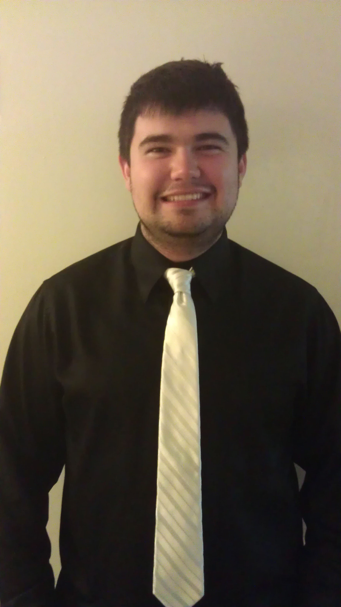
Mentors: Ajay Gulati and Banit Agrawal
Team Name: Null Terminators
Project Overview: High Level Description: VMware is company that provides virtualization and cloud computing infrastructure. Our project comprises collecting performance stats from hosts, creating visualization of time-series, and automating decisions based on time-series analysis.
Vision Statement: [PDF]
SRS: [PDF]
Design Specs: [PDF]
Final Poster: [PDF]
Final Presentation: [PDF]
Foo-Tang Clan
Partner: Appfolio
Team:
Abraham Dela Cruz (lead), Raj Luhar, Chris Horuk, Joey Phommasone, Zack Warburg
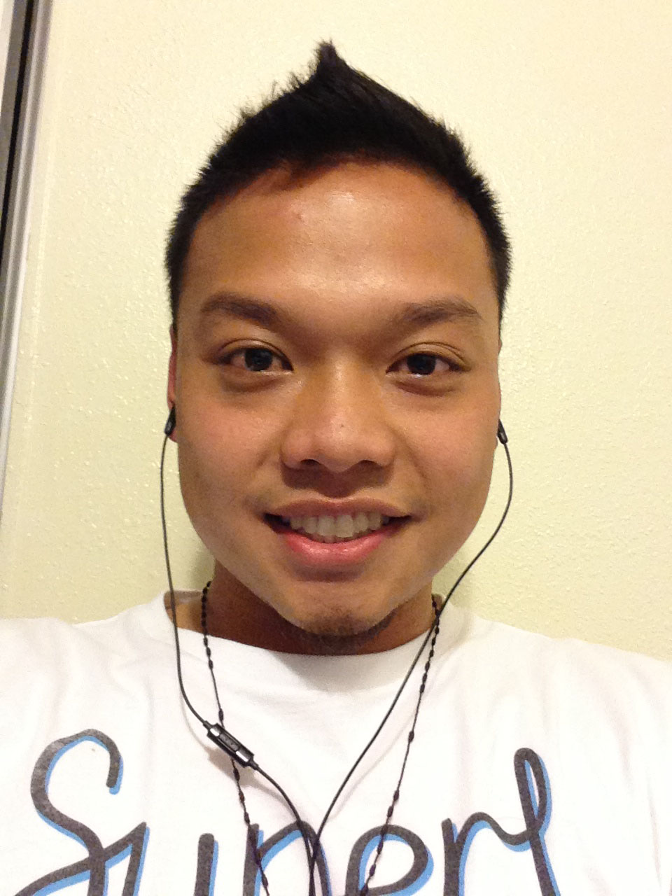
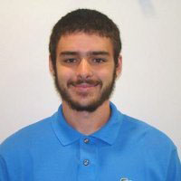
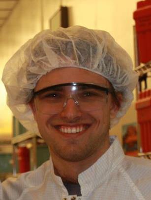
Mentor: Andrew Mutz
Team Name: Foo-Tang Clan
Project Overview: A tenant-facing mobile application that lets users pay their rent, report maintenance issues, communicate with neighbors. Built using cross-platorm HTML5, leveraging Appfolio backend.
Vision Statement: [PDF]
SRS: [PDF]
Design Specs: [PDF]
Final Poster: [PDF]
Final Presentation: [PDF]
Nibble
Partner: Novacoast
Team:
Andy Duong (lead), Tong Wu, Mark Oparowski, Jimmy Lee
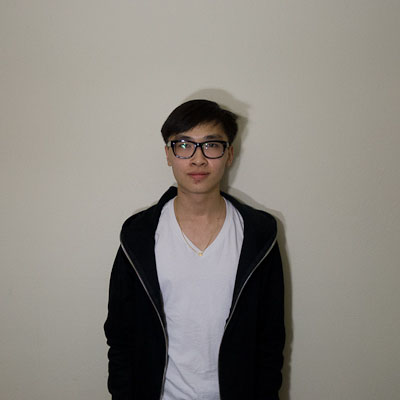
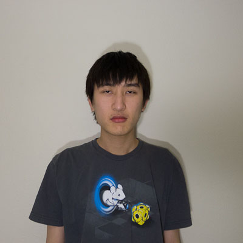
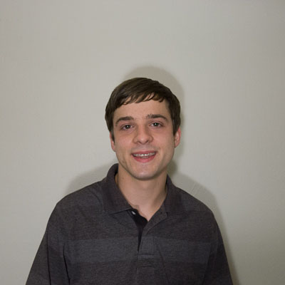
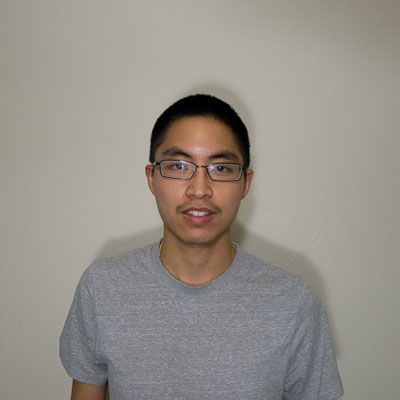
Mentors: David Parker and Renato Untalan
Team Name: NIBBLE
Project Overview: A tool to explore and create documentation for web services and API's in order to display them in a deliverable format.
Vision Statement: [PDF]
SRS: [PDF]
Design Specs: [PDF]
Final Poster: [PDF]
Final Presentation: [PDF]
Team Epsilon
Partner: Qualcomm
Team:
Max Hinson (lead), Jhon Faghih-Nassiri, Luke Buckland, Andy Chou, JiCheng Huang
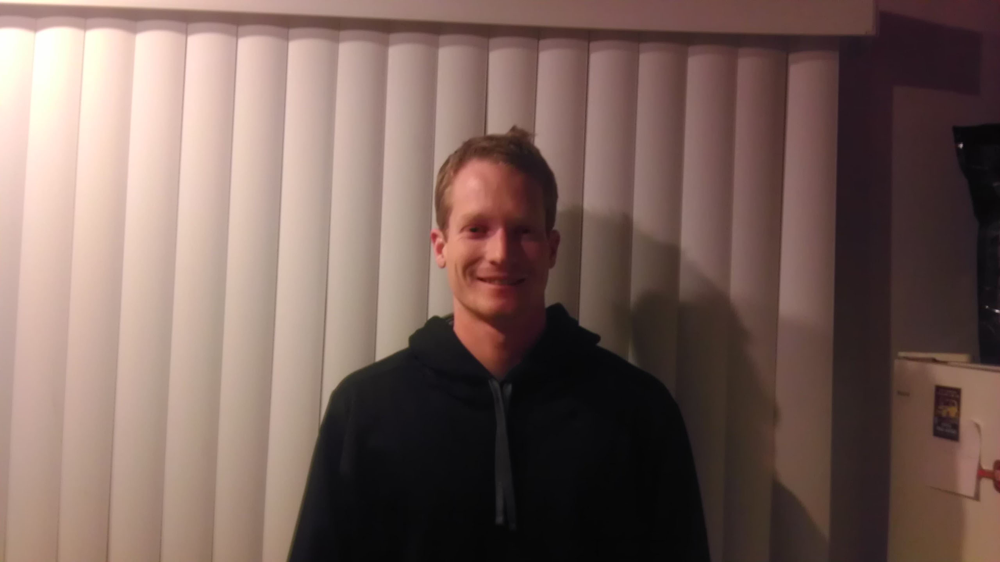
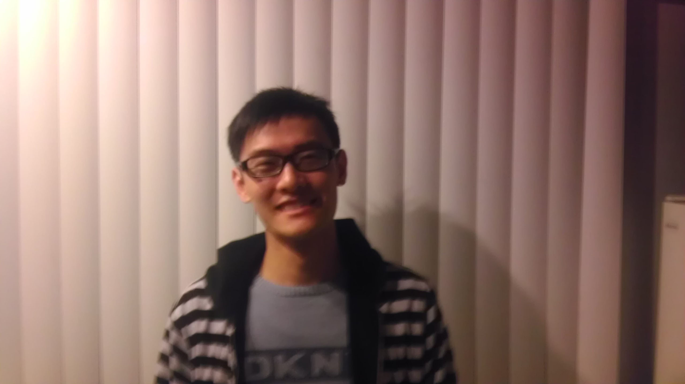
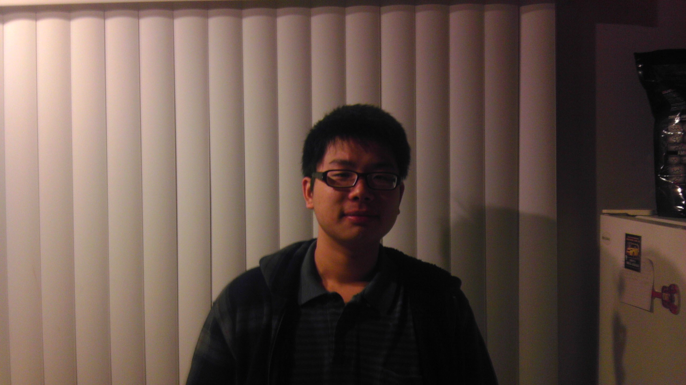
Mentors: Chad Sweet and Prince Gupta
Team Name: Team Epsilon
Project Overview: We aim to explore applications for computer vision and augmented reality on Android-powered mobile devices. Our goal is to create an experience that combines augmented reality with social media.
Vision Statement: [PDF]
SRS: [PDF]
Design Specs: [PDF]
Final Poster: [PDF]
Final Presentation: [PDF]